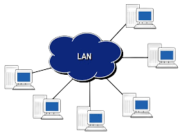
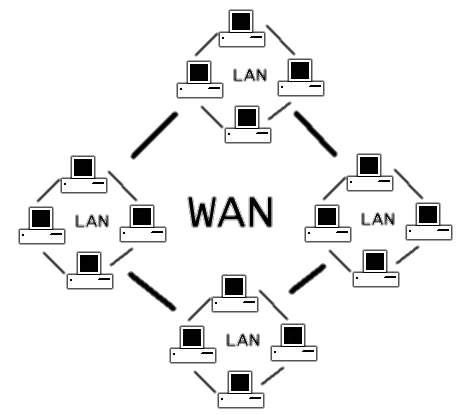
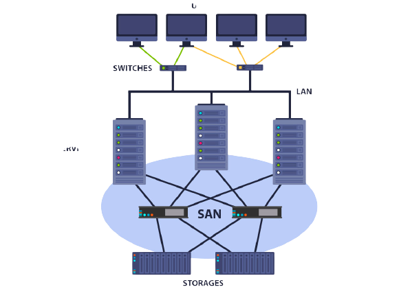
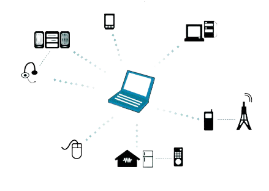
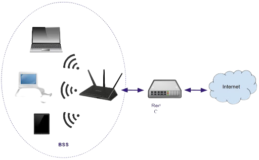
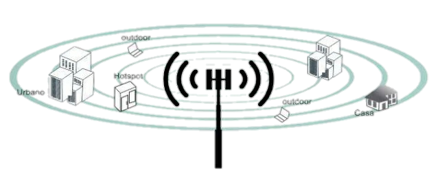
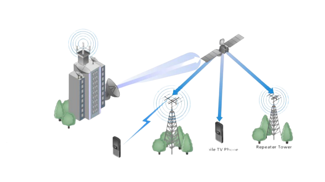

Rede Local - LAN
As Redes Locais (Local Area Network, LAN) conectam computadores que estão em um mesmo espaço físico. Este é o formato mais conhecido e está presente em escolas, escritórios, e até na sua casa. Por meio dela, é possível compartilhar informações e recursos entre os dispositivos participantes.
Rede Metropolitana - MAN

Este tipo de rede (Metropolitan Area Network, MAN) conecta diversas redes locais que estejam a até algumas dezenas de quilômetros de distância. Em geral, é utilizada para interligar escritórios de uma mesma empresa que estejam em bairros ou até em municípios diferentes.
Rede de Longa Distância - WAN
Os utilizadores das Redes de Longa Distância (Wide Area Network, WAN) conseguem conectar equipamentos em locais ainda mais distantes que os da MAN. Sua cobertura permite interligar equipamentos que estejam em países ou continentes diferentes.
Rede de Área de Armazenamento - SAN
Este tipo de rede (em inglês Storage Area Network ou SAN) é utilizado, unicamente, para armazenar dados da rede e para fazer a comunicação entre um servidor e os demais dispositivos.
Rede de Área Pessoal - PAN
A PAN (Personal Area Network) é utilizada para que dispositivos se comuniquem dentro de uma distância bastante limitada. Ela conecta dispositivos a uma distância curtíssima. A ligação por Bluetooth é um bom exemplo.
Rede Local Sem Fio - WLAN
A rede WLAN (em inglês Wireless Local Area Network) pode ser uma opção à LAN. Para quem quer acabar com os cabos, ela se conecta por meio da internet e é bastante usada em residências e em lugares públicos.
Rede Metropolitana Sem Fio - WMAN
Esta é uma versão sem fio (Wireless) da MAN (Metropolitan Area Network). Seu alcance também é de dezenas de quilômetros, o que torna possível conectar câmpus de universidades e redes de escritórios.
Rede de Longa Distância Sem Fio - WWAN
Este tipo de rede sem fio é o mais sujeito a ruídos. A WWAN (em inglês: Wireless Wide Area Network) alcança diversas partes do mundo e é a tecnologia utilizada pelas operadoras de celulares para criar suas rede de transmissão.